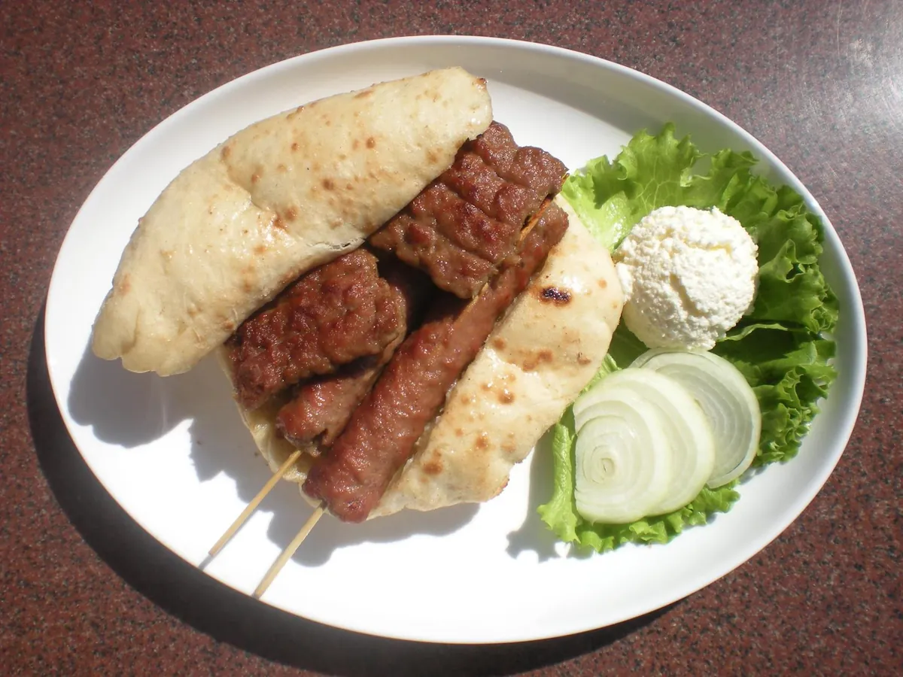

Naša priča
Gricko je roštiljarnica na Tuđmanovoj 54 u Zadru. Naš specijalitet su šiš ćevapi po banjalučkom receptu — pikantna mljevena junetina s roštilja, u lepinji, s kajmakom, ajvarom i svježim lukom.
Jede se vani, u vrtu pod pergolom obraslom glicinijom, uz staru maslinu i fontanu. Ljeti je hladovina, a tu je i vlastiti parking — rijetkost ovako blizu centra.
Pečemo po narudžbi. Može i za van. Na Tripadvisoru nas gosti drže na 4,5 od 5 i 20. mjestu među 310 zadarskih restorana.